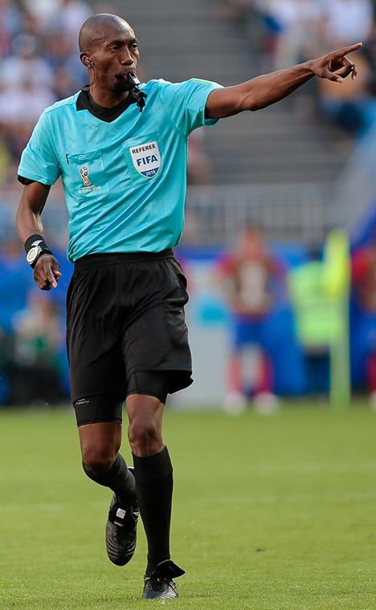

월드컵 그라운드 밖 잡음… 입국 거부된 소말리아 심판, FIFA가 전액 보전
북중미 월드컵 개막 직후, 미국 입국이 거부된 소말리아 출신 심판 오마르 아르탄에게 FIFA가 월드컵 수당 전액을 지급하기로 했다. 대회 운영을 둘러싼 입국·이동 문제가 그라운드 밖 변수로 떠올랐다.
유선경 기자 · 2026.06.15
橋국제·스포츠

올림픽스닷컴 등에 따르면, 미국 입국을 거부당한 소말리아 출신 심판 오마르 아르탄에게 FIFA가 월드컵 참가 수당을 전액 지급하기로 했다. 본인의 책임이 아닌 사유로 합류하지 못한 데 따른 조치다.
광고 문의 · 300×250이번 사례는 여러 나라에서 열리는 대회 특성상 심판·관계자의 입국과 이동이 새로운 운영 변수임을 드러냈다. 경기 결과 못지않게 행정·이동 문제가 대회의 매끄러운 진행을 좌우할 수 있다는 점이 부각됐다.
월드컵은 6월 14일에도 활기를 띠었다. 사상 최소 규모 출전국인 쿠라소가 휴스턴에서 독일과 데뷔전을 치렀고, 에콰도르는 필라델피아에서 코트디부아르와 첫 경기를 가졌다.
그라운드 위 명승부와 별개로, 대규모 국제대회를 여러 도시·국가에서 동시에 운영하는 일의 복잡성도 함께 드러났다. 입국 정책과 이동 보장이 향후 대회 운영의 과제로 남았다.
출처·참고 (사실 확인용 — 본문은 직접 재작성)
· 올림픽스닷컴 (Olympics.com)
· ESPN
· 올림픽스닷컴 (Olympics.com)
· ESPN